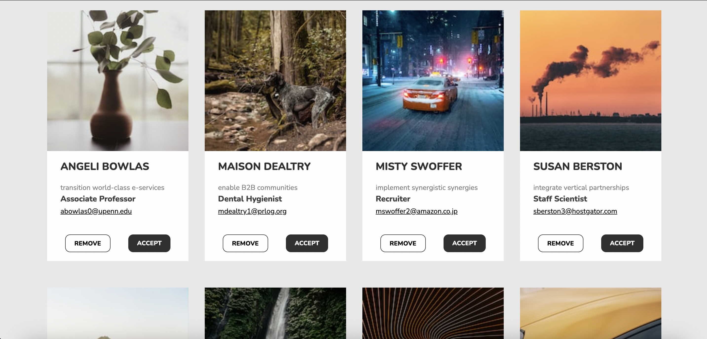
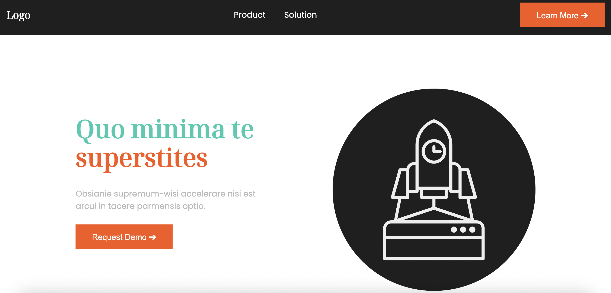

Design projects focused on fonts, colors and animations

13C.01.01 Fonts and UI components
In this assignment I worked with creating a font hierarchy and designing UI cards.
Learn More ➔
13C.01.02 Working with colors and animations
This assignment focused on implementing colors to a mockup page, designing a dark theme and adding animations.
Learn More ➔What I learned in the theme
I learned how to use the different types of fonts, how to choose the right one for body text and how to test font hierarchy in typescale. I also learned how to layout and design UI cards to highlight important information, created my first dark theme and used Huemint to find a nice color palette. I finally learned how to use javascript for simple animations to enhance the user experience on a website.